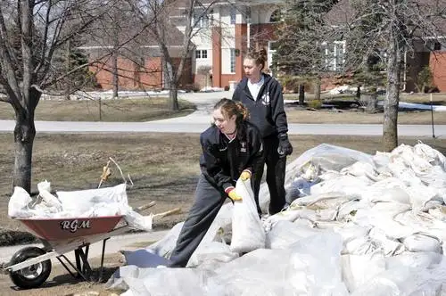

[Originally printed in The Forum newspaper Wednesday, May 1; reprinted with permission.]
Where the water swells, the spirit dwells
By Roxane B. Salonen, The Forum
BRIARWOOD, N.D. – When the Red River began flowing this spring, so did Sharon Beauclair’s memories of a flood four years ago that sneaked up and surprised this small township just beyond the bounds of Fargo.
 |
Jill Prososki, left, helps her friend Naomi Beauclair work to rebuild a dike for the second crest of the 2009 flood at the Beauclair family home in Briarwood. Special to The Forum
|
{kind=link}
Remembrances of the frenzied activity that engulfed the neighborhood come easily – the makeshift human sandbag factory, helicopter rescue missions and a popcorn tin turned temporary latrine.
But stories of how God stayed nearby through it all fall to the fore just as readily.
“At one point I looked out from the top floor of our house and I thought, ‘Okay Lord, I’m just going to trust you that it’s all going to work out,’” Beauclair says.
She still marvels at how the neighbors pulled together despite being “tired, cold and dirty; they just kept plugging along.”
At one point, the water had filled in to such a degree that the road leading to their home from South University Drive went under. The National Guard had stopped anyone from coming through, yet more sandbags were needed to save their home.
As Beauclair looked out at the rising water with concern, two familiar faces suddenly emerged.
Grant Allex and his son, Addison, had found an opening and were wading in from the road to help their friends.
“They were angels. They helped us get our sandbags down,” Beauclair says. “When they left, Grant had to carry Addison on his back because the water was so high.”
The night before the river crested, Beauclair’s husband, John, went in search of drain plugs, but met with a “closed” sign at Menards. Another man also walking up to the store asked John what he’d come for. Turns out he was a plumber who had plugs to spare back at his shop, Beauclair recounts.
Another time, the couple woke at 4 a.m. to find water seeping into the window well – the result of a leaking dike. So they and their three of six children still at home yanked on their coats and boots to help dig a trench for sump pumps.
The pumps needed gas, though, and John couldn’t reach the road. That’s when a man helping another neighbor appeared and offered the use of his pickup parked over the barrier by the road, Beauclair says.
The family also benefited from food brought in by a neighbor who’d evacuated but come back to feed her hungry friends, and received countless prayer offers, as recorded on their ill-attended answering machine.
Beauclair says she attributes the gestures to more than simple human kindness because to her, the timing and selflessness of those who acted point to something divine.
“I knew there was a higher power involved because it was always right when we needed it, like when John needed the plugs,” she says. “What are the chances a plumber would walk up just then?”
Three empty chairs
On the other side of the river that same year, Mark Krejci was slugging sandbags with his new neighbors in south Moorhead.
A native of East Grand Forks, Minn., Krejci says he knew flooding well and felt their area was safe.
But the elements proved otherwise, and soon he and his father, a potato farmer, were fashioning sandbags from burlap bags.
As the river neared crest, they got a call from their pastor, the Rev. Mike Foltz from St. Joseph’s Church. Because so many of the neighbors were from St. Joe’s and couldn’t get to church, he offered to bring Sunday Mass to them.
“We all piled into a family room of one of the homes and packed the place with chairs,” he says, noting that three extra chairs had ended up in the middle of the circle. Then, just as Foltz was about to begin the service, the doorbell rang.
It turned out to be a Moorhead firefighter who’d been helping with the flood fight and his wife and son, Krejci says. They’d just lost their home to overland flooding and were looking for a neighbor, and when they found out what was about to take place, they asked if they could join in.
“We’d gotten a late start because we were talking,” Krejci says, “but I guess God wanted us to wait for these three. It was just one of those great ‘God moments.’ ”
Where’d everyone go?
Sometimes, for whatever reason, when God calls his people to action, silence follows. Such was the experience of Barb Olson, Fargo.
A city girl, Olson remarried after being widowed and was thrust into country living when she joined her new husband, Otis, on his family farmstead near Perley, Minn., in the mid-1990s.
Then came the record-breaking winter of 1997, its horrid ice storm and resulting flood, which engulfed their home – so much so that fish could be seen jumping in the swirling waters outside their doorstep.
Inclined toward ministry work from an early age, Olson says her greatest desire during the crisis was to gather with her faith family at church, but she soon discovered the church had been abandoned.
“When you’re kind of marooned by water everywhere, the one thing you want to do is have services in the church, but (the pastor) decided to cancel services since it was flood time,” she says.
And she may always wonder why, though neighbors were helping neighbors, their farmstead was overlooked. “My husband is well-known as was his father and grandfather, and yet not one person volunteered to come out and help us,” Olson says, noting that Otis learned their farmstead had been overtaken while helping someone else.
The couple ended up living in the home for a year without electricity or running water, using boats to reach Highway 75 to replenish supplies. Despite being insured, they ended up having to spend $100,000 of their own money to move the house closer to the road, since the foundation had been ruined.
Through it all, Olson says she never lost faith in God and learned much about perseverance. “I care for other people and I’m called on a lot but I’m the one who is blessed in that,” she says, mentioning her favorite passage, Psalms 121. “If Christ doesn’t shine through you, you can’t minister to other people.”
Life-giving waters
Zach Priddy, a college student in the National Guard in 2009, didn’t have a home that needed saving, but his soul did. After losing his father when he was 15, he says, he’d never really gotten over the emotional pain and had started numbing his feelings with drugs and alcohol.
His girlfriend was about to break up with him when he arrived in Moorhead for flood duty, he says. While there, he began attending Apostolic Bible Church and was welcomed with open arms.
“To get addictive behaviors out of your life you have to develop positive relationships,” he says.
“I developed all these friends at church and in the Guard, and it helped me get past all that.”
Priddy ended up with the girl, Rochel, now his wife, and is giving back to that church by serving as its youth leader. “The flood changed my life in a good way. I’m totally different from what I was three, four years ago,” he says.
{kind=link}
Roxane B. Salonen is a freelance writer who lives in Fargo with her husband and five children. Readers can reach her at roxanebsalonen@gmail.com